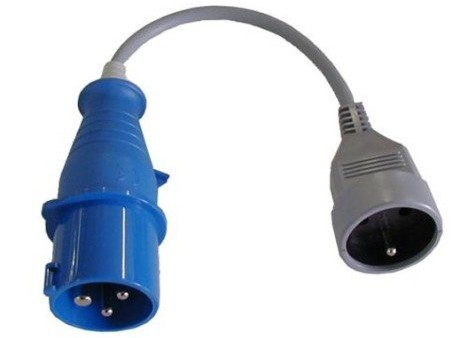
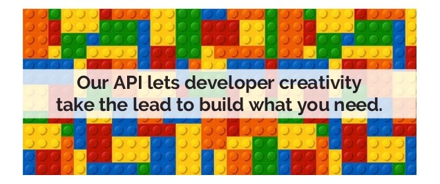
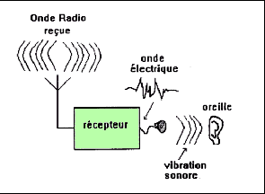
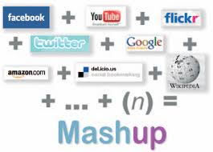
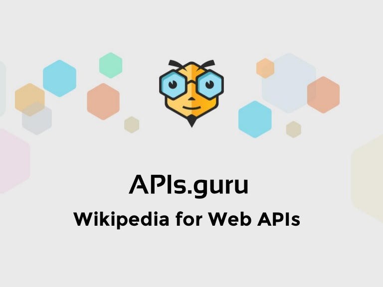
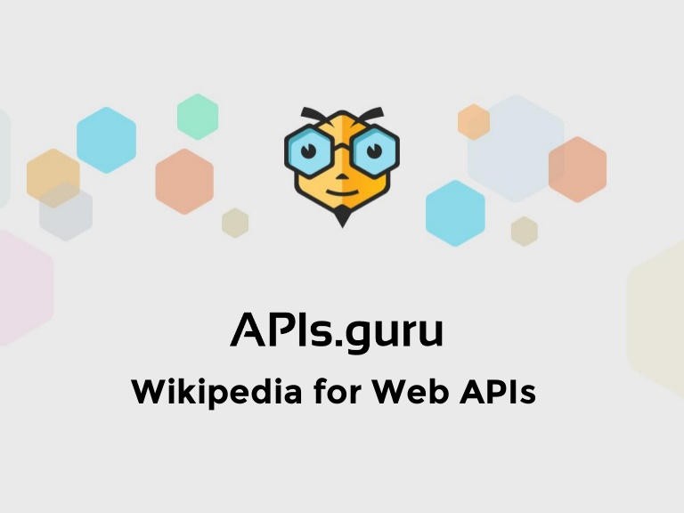
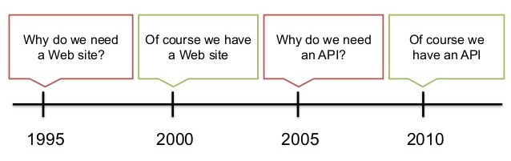
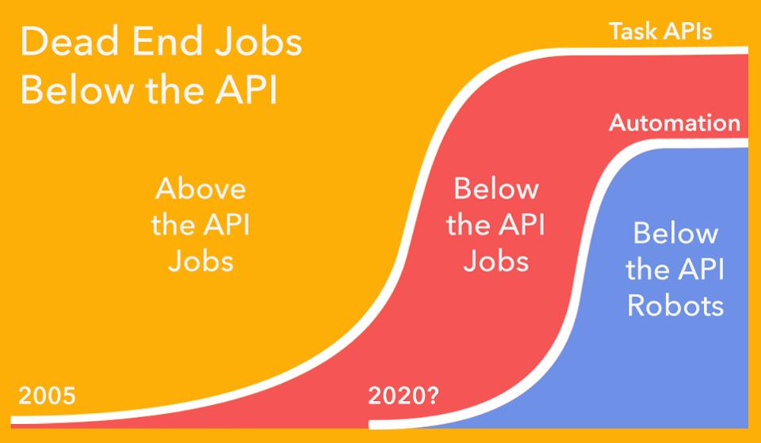

Une API Web . . .
Métaphore de la prise électrique
- Je n'ai pas à connaitre comment marche le transformateur ou la centrale électrique, ni comment est acheminé le courant
- Je branche ma prise et j'ai du 220V en alternatif : je déménage dans un autre logement et je peux encore brancher mon réfrigérateur
- Je vais avoir du courrant électrique tout le temps : je peux mettre des choses dans le congélateur ...
Qu'est-ce que c'est ?
- Application Programming Interface
- Permet a une application de mettre ses fonctionnalités et données a disposition d'autres applications
- Exemple de fonctionnalité : navigation dans une carte avec zoom et drag
- Exemple de données : les images de fond de carte
- En mode Web : rien à installer, on passe par le réseau
A quoi ca sert ?

- Les applications ont besoin de données pour fonctionner <=> courant pour les appareils électriques
- Des applications différentes qui ont des besoins similaires. Exemple : système de paiement
- Les APIs facilitent l'interopérabilité
C'est un service
- Comme l'eau, l'électricité ou l'accès à internet
- Fonctionnalités ou données en tant que service
- Manière d'exposer son métier (sur le Web, l'exposition peut être mondiale)
- Mises à jour en continu, données fraîches
- Coûts récurrents plutôt qu'investissement
- Permet une élasticité : les dépenses grossissent avec la taille du business
Ca revêt quelle forme ?
- Service web : adresse Web à laquelle on se connecte
- Accès via le réseau
- Contrat d'utilisation
- Documentation décrivant son utilisation
- Pour l'application cliente, elle est vue comme une boîte noire
C'est de plus en plus utilisé

Modèles économiques
Objectif
- Une autre manière de monnayer ses données ou son savoir faire
- Devenir standard pour être incontournable
- Etre consommée par le plus grand nombre
- La concurrence peut être rude !
- API en tant que produit
Abonnement
- En général différentes gammes d'abonnement
- Limitation sur le volume de données ou le nombre d'appels par mois
A la consommation
- Possibilité de mesurer très finement la consommation
- Pay for what you use
- Sentiment d'efficacité coté client : pas d'argent gaspillé
Stabilité
Contrat de service
- Le format des données est contractualisé, tout comme la manière d'utiliser l'API
- Il ne faut pas avoir besoin de mettre à jour les applications qui consomment une API qui évolue
- Si le contrat ne convient pas, on peut faire des adaptateurs ou des connecteurs

Garantie de service

- Le service doit tourner tout le temps, 24h / 24h
- Problèmes qui peuvent être conséquents si coupures
- SLA: Service-level agreement. 99.99% = 52 minutes, 36 secondes de coupure par an au maximum
Le manuel d'utilisation
Documentation
- Souvent négligée, pourtant vitale
- Facilite la (ré)utilisation et donc l'adoption de votre API
- Même en interne, même seul facilite la réutilisation. Je suis le premier lecteur de mes documentations d'API
- Utiliser des standards comme OpenAPI : le developpeur rentre plus facilement dans la documentation
- Exemple : API de géocodage

Objectif
- Maximiser l'utilisation de votre API auprès d'un certain public
- Un développeur doit pouvoir faire le premier appel (TTFAC : Time To First API Call) en moins de 5 minutes
- Bien comprendre l'intéret, la valeur ajoutée de votre API

Différence avec une base de données
Pourquoi ne pas se connecter directement à une base de données ?
- Problèmes de sécurité
- On ne peut pas accéder à la base de n'importe où
- Une fois qu'on accède à une base, on a accès à toutes les données
- Lire les données peut être difficile : ex jointures entre plusieurs tables
Authentification
- Plus de stratégies possibles
- Gestion de quotas
- Permissions fines
- Accès personnel ou de groupe
- Tracabilité, mesure de l'activité
Accès universel
- REST : On utilise HTTP qui est standard
- Permet de casser les silos : des données peuvent être réutilisées dans d'autres contextes
- Permet de s'ouvrir progressivement au reste du monde (ou pas)
Composition d'API
Métaphore du poste de radio (sans piles)
- Connecté à plusieurs flux: courant électrique sur secteur et ondes radios
- Fourni un nouveau service en utilisant 2 briques de base


- On construit une application en utilisant les fonctionnalités ou données de plusieurs APIs
- ITTT : If This Then That
- Créer des interactions sans avoir à coder
- Notification quand la météo annonce de la pluie
- Si une nouvelle photo est partagée sur Facebook, alors elle se voit automatiquement sauvegardée sur Flickr
Catalogage
- Casser les silos favorise l'innovation
- Il faut pouvoir connaître ce que l'on a sous la main
- Les catalogues d'API permettent de s'y retrouver
- La Poste, RTE, Pôle Emploi...
 

Limitations
- Perte d'autonomie : les applications ne peuvent plus fonctionner toutes seules
- Performances : une api qui appelle une autre api à l'autre bout du monde par exemple
- L'aspect contractuel implique une certaine rigidité, qui peut freiner l'évolutivité
- Données collectées : nécessité de bien encadrer tout ça (GDPR, ...)
Conclusion

- Monétisation, nouvelle opportunité de business
- Obligation de contractualiser et documenter => amélioration de la qualité
- Avant tout utile en interne (Ex: Netflix: 99.9 % de l'utilisation est interne)
- Tendance de fond: si on y va pas on peut être remplacé à terme (ex IGN, Pages Jaunes, ...)
Les APIs posent aussi d'autres questions ...
